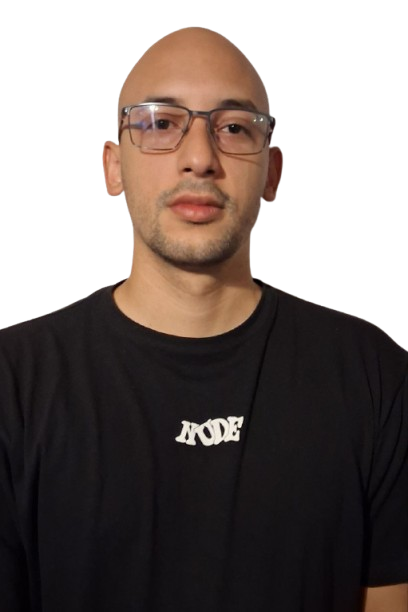

Acerca de mí

Quién soy
Soy Rolando Cobis, estudiante de la Tecnicatura Universitaria en Desarrollo Web del CURZA y desarrollador backend en Go. Mi trabajo diario son servicios y APIs, y en paralelo me estoy formando en la parte de infraestructura: integración continua, contenedores y administración de sistemas GNU/Linux. Nada de esto venía de antes. Cuando me inscribí en la carrera no había programado nunca.
Por qué elegí la Tecnicatura en Desarrollo Web
Llegué a la informática por Linux. Unas semanas antes de anotarme me crucé con el sistema casi por casualidad, y lo que arrancó como probar un escritorio distinto terminó en querer entender qué pasaba abajo: el sistema de archivos, los permisos, la terminal. Esa curiosidad fue la que me hizo buscar la carrera.
Me inscribí en la Tecnicatura para convertir esa curiosidad en una formación ordenada. Aprender solo alcanza para resolver el problema que uno tiene enfrente; lo que busco acá es el criterio de fondo, entender por qué las cosas se hacen de una manera y no de otra, que es justamente lo que no se aprende a fuerza de tutoriales sueltos.
Tecnologías que me interesa estudiar
- Go, para desarrollo de backend y herramientas de línea de comandos
- Python, por su uso en scripting y en la cursada de IPOO
- Dart y Flutter, para desarrollo de aplicaciones móviles
- HTML, CSS y JavaScript, base del desarrollo web del lado del cliente
- Bash, para automatización y administración de sistemas GNU/Linux
- Nix, para configuración declarativa y entornos reproducibles